Association Rule Mining
Analyses: ARM
Data preprocessing:
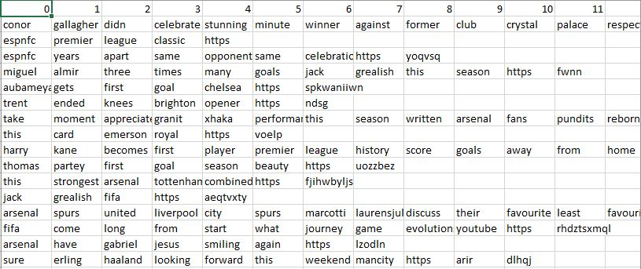Using the twitter API method to pull tweets from module 1, this dataset was generated. The dataset contains 300 tweets, and further cleaning is required to remove some unwanted words. The code for the cleaning process is included below. After cleaning the dataset will look like the below image, and then we can run association rule mining algorithms on it.
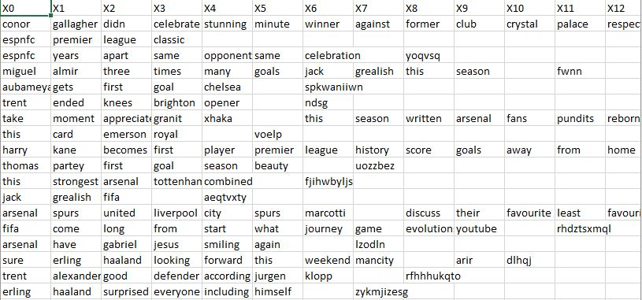ARM:
Association rule mining is usually used to find relationships/associations between words, item sets in large datasets. It shows how frequently an itemset occurs. Usually tranascation data is given as an input for this algorithm. An example for this can be the market basket analysis, in which we have a sample of products purchased by customer in transaction format. Using ARM we can find associations between the products and see which two products are bought together frequently. The association rule has 2 parts, antecedent and consequent. antecedent is the item which is found in the dataset and consequent is the item found with the antecedent. For example, People who buy diapers often tend to buy beer aswell. Here diaper is the antecedent and beer is the consequent.
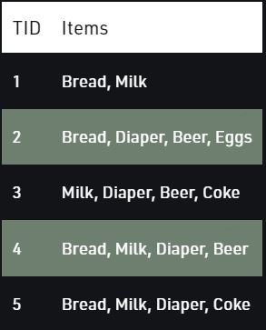Rule evaluation metrics:
Support: It is the percentage of number of transactions which includes the itemset from all transactions. It shows how popular the itemset is. It can be calculated by: Support = no.of({x}->{Y}) / (total transactions)
confidence: This measure says how many times Y(consequent) has occured when X(antecedent) has also occured. It is measured by the ratio of how many times X and Y have appeared together to X appearing alone. It can be calculated by: Confidence = Support(X,Y) / Support(X)
Lift: It shows how often Y is purchade when X was also purchased, while also considering the popularity of Y. If the value of lift is greater than 1 then it implies that X and Y appear together often. If it is less than one then it means X and Y are unlikely to appear together. It can be calculated by: Lift = Support(X,Y) / ( Support(X) * Support(Y) )
Taking the above market basket analysis let's try to calculate support, confidence, and lift : Support for {Diaper}->{Beer} : sup = 3 / 5 = 0.60 (60%) Confidence for {Diaper}->{Beer} : conf = (3/5) / (4/5) = 0.75 (75%) Lift for {Diaper}->{Beer} : lift = (3/5) / ( (4/5) * (3/5) ) = 1.25
Coding:
Results:
Rules for support:
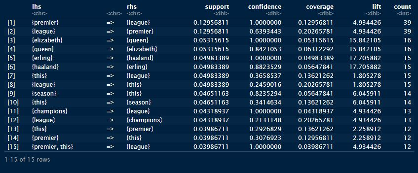These are the 15 rules we obtained when sorted based on support. The highest support percentage is 12.9%, so the tweets we gathered have varied words and very less repeating words. In our sample of 300 tweets, we can see that most of the tweets are about premier league, queen elizabeth and erling haaland.
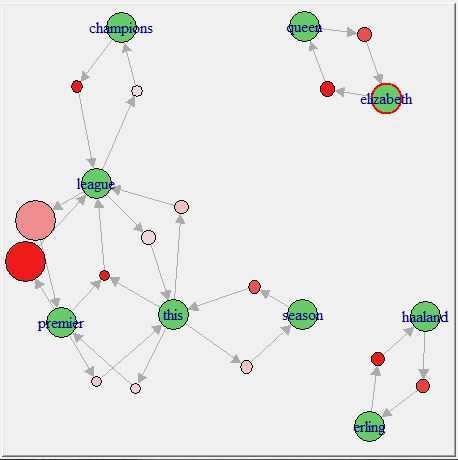 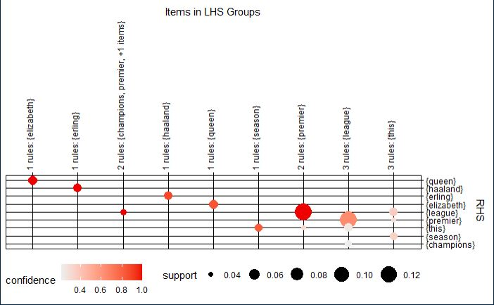Rules for confidence:
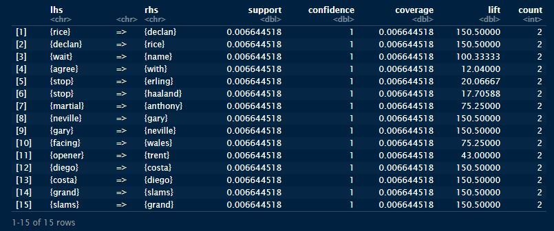These are the 15 rules we obtained when sorted based on confidence. We can see that all of the top 15 rules have 1 for confidence. This means that whenever lhs appeared, rhs also appeared. for example, when rice was present, declan was also there in the same tweet. Lot of these rules seem to be names of players as often their full names are used in tweets. We can even see that the count is 2. which is very low as we have 300 tweets. Below are the visualizations for the rules.
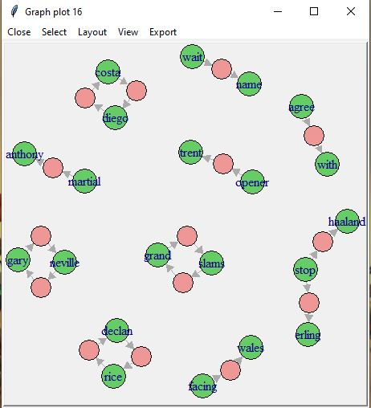 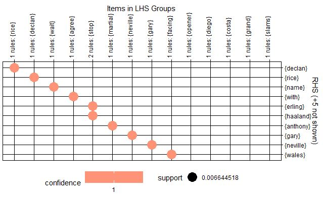Rules for lift:
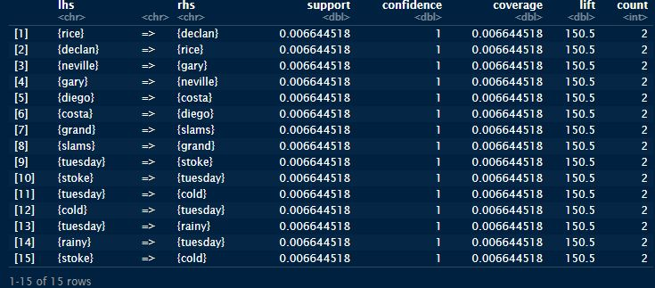These are the 15 rules we obtained when sorted based on Lift. We have very high lift for these rules. It is because the support percentages are so low being 0.0066, and when substituted in our formula we get lift as 150. The count again is very low for these rules. From the visualizations we can make out that tuesday in stoke will be cold and rainy.
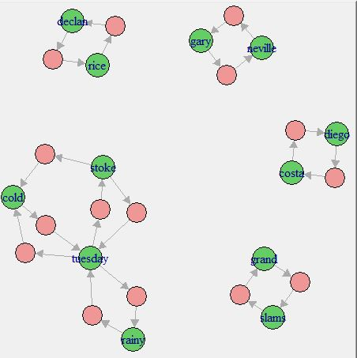 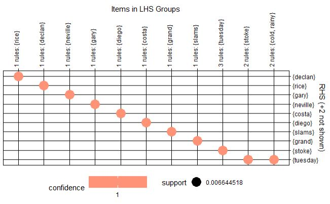Conclusion:
After taking a look at the results, we can observe that rules evaluated by support gives us the best information. Though the support and lift were high the sample was too low for it to mean anything. These tweets mostly speak for the end of month of september 2022. We can see some of the trending topics for football in UK. As premier league was halted for more than 3 weeks due to the loss of queen elizabeth and the following international break for football, people seem to be hyped about premier league. Champions league is also trending as it will resume from the first week of october. The tweets is also talking about the season so far and a few records set by different teams. Queen elizabeth has also appeared many times in tweets releated to football because many of the famous players, managers have paid their respects, tribute to the late queen of england. This news has made it into the tweets. Erling haaland is another name that has frequently appeared. He was one of the new additions to the squad of manchester city, and is already in the top of the scoring charts with 11 goals to his name. We can also see the word stop associated with haaland, referring to whether his scoring form can be stopped by other teams. From this data which was gathered from espn Uk tweets we can observe that most of the trending stuff in england is related to football. Grand slam which is related to tennis was also found in the tweets but with a very low count of 2. Currently in UK, premier league, champions league and erling haaland are the top 3 most happening topics for football. We may see these three names being mentioned in many news sources.